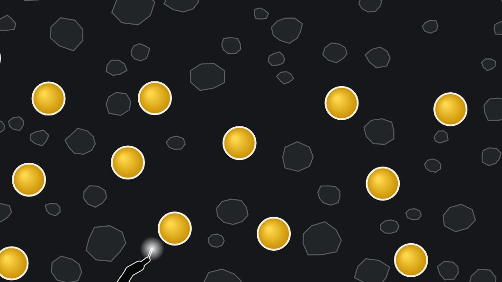

Every day, 2,000 tonnes of Nairobi’s waste reach Dandora.
We turn it into roads that heal themselves.
Smart Asphalt is a road surface made partly from Dandora’s plastic waste and used cooking oil. It carries tiny capsules of plant oil that repair cracks before they become potholes, and it is designed to create paid work in the community that collects the waste.

A road that carries its own repair kit.
Think of skin healing a cut. Smart Asphalt hides tiny capsules of plant oil inside the road. When a crack forms, they open and help the road seal itself.

1A crack starts
Heavy traffic and the sun slowly age the road. A hairline crack forms, the first step towards a pothole.
Capsules break
Tiny capsules of plant oil are mixed all through the road. When the crack reaches them, they break open.
Oil flows in
The oil seeps into the crack and softens the old, brittle road glue (bitumen) on both sides.
The sun seals it
Kenya’s sun warms the road. The softened edges flow together and the crack closes, before it becomes a pothole.
Illustrations from our animation. This is how the design is meant to work; it has been shown in laboratories by other researchers, and we are now raising money to test our own version.
Where would you like to start?
How it works
The idea in plain words, with pictures. No engineering needed.
Start here I care about DandoraWhy Dandora
The community behind the idea, its challenges, and the jobs it could create.
Read the story I’m a judge or scepticHard questions
Plastic and the environment, nanoplastics, will the capsules survive? Straight answers.
See the answers I’m an engineerThe technical side
Binder design, capsule design, production, test methods and the validation plan.
Go technical I’m a funder or investorThe plan
The truck-yard pilot, the business model, the market and the KES 3M ask.
See the plan I want to helpGet involved
Labs, road agencies, mentors, funders and Dandora groups: how to work with us.
Get in touchWant proof? Every fact on this site links to its source on the evidence page. You can also run the healing simulator or read the research.
Two problems, one solution.
Fewer potholes
Cracks are repaired while they are still small, so roads last longer for everyone who uses them.
Lower repair bills
Road agencies spend less on patching and resurfacing: about 30% less over 20 years in our model, to be proven in the pilot. Source M3
Paid work in Dandora
We buy plastic and process it near the dumpsite, turning waste picking into fairly paid, safer work.
“I grew up beside this dumpsite. I want its waste to become its income.”
Leslie Owuor was born and raised in Dandora and studies Civil Engineering at JKUAT. He led the research behind Smart Asphalt and is building it with the community that lives with the waste.